library(help="datasets")11 Data Import & more plotting
Built-in R datasets
R comes bundled with some standard data sets. To get a complete list, use the following command:
To see the description of a particular data set:
help(iris)Data exploration
R has some functions to get some summary information about the data.
dim(mtcars)[1] 32 11head(mtcars) mpg cyl disp hp drat wt qsec vs am gear carb
Mazda RX4 21.0 6 160 110 3.90 2.620 16.46 0 1 4 4
Mazda RX4 Wag 21.0 6 160 110 3.90 2.875 17.02 0 1 4 4
Datsun 710 22.8 4 108 93 3.85 2.320 18.61 1 1 4 1
Hornet 4 Drive 21.4 6 258 110 3.08 3.215 19.44 1 0 3 1
Hornet Sportabout 18.7 8 360 175 3.15 3.440 17.02 0 0 3 2
Valiant 18.1 6 225 105 2.76 3.460 20.22 1 0 3 1tail(mtcars) mpg cyl disp hp drat wt qsec vs am gear carb
Porsche 914-2 26.0 4 120.3 91 4.43 2.140 16.7 0 1 5 2
Lotus Europa 30.4 4 95.1 113 3.77 1.513 16.9 1 1 5 2
Ford Pantera L 15.8 8 351.0 264 4.22 3.170 14.5 0 1 5 4
Ferrari Dino 19.7 6 145.0 175 3.62 2.770 15.5 0 1 5 6
Maserati Bora 15.0 8 301.0 335 3.54 3.570 14.6 0 1 5 8
Volvo 142E 21.4 4 121.0 109 4.11 2.780 18.6 1 1 4 2summary(mtcars) mpg cyl disp hp
Min. :10.40 Min. :4.000 Min. : 71.1 Min. : 52.0
1st Qu.:15.43 1st Qu.:4.000 1st Qu.:120.8 1st Qu.: 96.5
Median :19.20 Median :6.000 Median :196.3 Median :123.0
Mean :20.09 Mean :6.188 Mean :230.7 Mean :146.7
3rd Qu.:22.80 3rd Qu.:8.000 3rd Qu.:326.0 3rd Qu.:180.0
Max. :33.90 Max. :8.000 Max. :472.0 Max. :335.0
drat wt qsec vs
Min. :2.760 Min. :1.513 Min. :14.50 Min. :0.0000
1st Qu.:3.080 1st Qu.:2.581 1st Qu.:16.89 1st Qu.:0.0000
Median :3.695 Median :3.325 Median :17.71 Median :0.0000
Mean :3.597 Mean :3.217 Mean :17.85 Mean :0.4375
3rd Qu.:3.920 3rd Qu.:3.610 3rd Qu.:18.90 3rd Qu.:1.0000
Max. :4.930 Max. :5.424 Max. :22.90 Max. :1.0000
am gear carb
Min. :0.0000 Min. :3.000 Min. :1.000
1st Qu.:0.0000 1st Qu.:3.000 1st Qu.:2.000
Median :0.0000 Median :4.000 Median :2.000
Mean :0.4062 Mean :3.688 Mean :2.812
3rd Qu.:1.0000 3rd Qu.:4.000 3rd Qu.:4.000
Max. :1.0000 Max. :5.000 Max. :8.000 Reading data from a text file
Data is frequently stored in tabular form in text files. The read.table() function can read a file from your disk and return a data frame containing that data.
help(read.table)Suppose we have a data file mydata.txt with the following contents:
Can 1.70 65
Cem 1.75 66
Hande 1.62 61
Lale 1.76 64
Arda 1.78 63
Bilgin 1.77 84
Cem 1.69 75
Ozlem 1.75 65
Ali 1.73 75
Haluk 1.71 81The file can be read into a data frame simply with:
hwdata <- read.table("mydata.txt")Warning in file(file, "rt"): cannot open file 'mydata.txt': No such file or
directoryError in file(file, "rt"): cannot open the connectionhwdataError: object 'hwdata' not foundclass(hwdata)Error: object 'hwdata' not foundWe can change the columns of the dataframe in the way we know:
names(hwdata) <- c("Name", "Height","Weight")Error: object 'hwdata' not foundhwdataError: object 'hwdata' not foundThe function read.table() is quite versatile, and it has a lot of parameters to tune its behavior. The help documentation can be helpful:
help(read.table)Now let’s read the data file mydata2.txt that has a header row, and set the column names of the resulting data frame accordingly:
Name Height Weight
Can 1.70 65
Cem 1.75 66
Hande 1.62 61
Lale 1.76 64
Arda 1.78 63
Bilgin 1.77 84
Cem 1.69 75
Ozlem 1.75 65
Ali 1.73 75
Haluk 1.71 81hwdata <- read.table("mydata2.txt",header = TRUE)Warning in file(file, "rt"): cannot open file 'mydata2.txt': No such file or
directoryError in file(file, "rt"): cannot open the connectionhwdataError: object 'hwdata' not foundNow read the file mydata3.txt whose fields are separated with commas instead of spaces:
Name,Height,Weight
Can,1.70,65
Cem,1.75,66
Hande,1.62,61
Lale,1.76,64
Arda,1.78,63
Bilgin,1.77,84
Cem,1.69,75
Ozlem,1.75,65
Ali,1.73,75
Haluk,1.71,81hwdata <- read.table("mydata3.txt",header = TRUE, sep=",")Warning in file(file, "rt"): cannot open file 'mydata3.txt': No such file or
directoryError in file(file, "rt"): cannot open the connectionhwdataError: object 'hwdata' not foundLet’s read the data file mydata4.txt which contains some comments added by the data collector.
Name,Height,Weight
Can,1.70,65
Cem,1.75,66
# Here is a comment
Hande,1.62,61
Lale,1.76,64
Arda,1.78,63
Bilgin,1.77,84 # another comment
Cem,1.69,75
Ozlem,1.75,65
Ali,1.73,75
Haluk,1.71,81The comment character can be set with the comment.char parameter to read.table().
hwdata <- read.table("mydata4.txt",header = TRUE, sep=",", comment.char="#")Warning in file(file, "rt"): cannot open file 'mydata4.txt': No such file or
directoryError in file(file, "rt"): cannot open the connectionhwdataError: object 'hwdata' not foundActually this was a redundant setting, because by default comment.char is already set to "#".
Sometimes a text in a field may contain the separator character. To avoid breaking the field’s content, we use quotes in the data file, such as the mydata5.txt file below:
Name Height Weight
"Can Can" 1.70 65
"Cem Cem" 1.75 66
"Hande Hande" 1.62 61
"Lale Lale" 1.76 64
"Arda Arda" 1.78 63
"Bilgin Bilgin" 1.77 84
"Cem Cim" 1.69 75
"Ozlem Ozlem" 1.75 65
"Ali Ali" 1.73 75
"Haluk Haluk" 1.71 81The function read.table() recognizes the single- or double quotes by default.
hwdata <- read.table("mydata5.txt", header=TRUE)Warning in file(file, "rt"): cannot open file 'mydata5.txt': No such file or
directoryError in file(file, "rt"): cannot open the connectionhwdataError: object 'hwdata' not foundOther quote characters can be specified with the quote parameter to read.table(). For example, consider the data file mydata6.txt:
Name Height Weight
%Can Can% 1.70 65
%Cem Cem% 1.75 66
%Hande Hande% 1.62 61
%Lale Lale% 1.76 64
%Arda Arda% 1.78 63
%Bilgin Bilgin% 1.77 84
%Cem Cim% 1.69 75
%Ozlem Ozlem% 1.75 65
%Ali Ali% 1.73 75
%Haluk Haluk% 1.71 81hwdata <- read.table("mydata6.txt", header=TRUE, quote="%")Warning in file(file, "rt"): cannot open file 'mydata6.txt': No such file or
directoryError in file(file, "rt"): cannot open the connectionhwdataError: object 'hwdata' not foundWriting data to a file
Suppose that we process the data file by, e.g., adding some columns.
hwdata <- read.table("mydata6.txt", header=TRUE, quote="%")Warning in file(file, "rt"): cannot open file 'mydata6.txt': No such file or
directoryError in file(file, "rt"): cannot open the connectionhwdata$BMI <- hwdata$Weight / hwdata$Height^2Error: object 'hwdata' not foundhwdata$BMI <- round(hwdata$BMI, 2) # round to two decimal placesError: object 'hwdata' not foundhwdataError: object 'hwdata' not foundThe function write.table() can be used to store a data frame in a file.
write.table(hwdata,"mydata7.txt")Error: object 'hwdata' not foundThis function writes the table together with the row names and column names:
"Name" "Height" "Weight" "BMI"
"1" "Can Can" 1.7 65 22.49
"2" "Cem Cem" 1.75 66 21.55
"3" "Hande Hande" 1.62 61 23.24
"4" "Lale Lale" 1.76 64 20.66
"5" "Arda Arda" 1.78 63 19.88
"6" "Bilgin Bilgin" 1.77 84 26.81
"7" "Cem Cim" 1.69 75 26.26
"8" "Ozlem Ozlem" 1.75 65 21.22
"9" "Ali Ali" 1.73 75 25.06
"10" "Haluk Haluk" 1.71 81 27.7We can omit the row and column names with the following parameter settings.
write.table(hwdata,"mydata7.txt",row.names = FALSE, col.names = FALSE)Error: object 'hwdata' not foundScatter plots of data
options(repr.plot.width=5, repr.plot.height=5)Plot the weight of the people in our data set versus their height.
plot(hwdata$Height, hwdata$Weight)Error: object 'hwdata' not foundOur data is made up, and it does not reflect reality. Let’s visualize a real life data set of height and weight of 10,000 people: https://github.com/johnmyleswhite/ML_for_Hackers/tree/master/02-Exploration/data
heights_weights_gender <- read.table("01_heights_weights_genders.csv", header=T, sep=",")Warning in file(file, "rt"): cannot open file '01_heights_weights_genders.csv':
No such file or directoryError in file(file, "rt"): cannot open the connectionLet’s see how the data looks like:
head(heights_weights_gender)Error: object 'heights_weights_gender' not foundPut the heights and weights of men on their separate vectors and plot.
men <- heights_weights_gender$Gender == "Male"Error: object 'heights_weights_gender' not foundmen_heights <- heights_weights_gender[["Height"]][men]Error: object 'heights_weights_gender' not foundmen_weights <- heights_weights_gender[["Weight"]][men]Error: object 'heights_weights_gender' not foundplot(men_heights, men_weights)Error: object 'men_heights' not foundChange the axis labels and add a plot title
plot(men_heights, men_weights,
xlab = "Height [inches]",
ylab="Weight [pounds]",
main="Weight vs height for men")Error: object 'men_heights' not foundChange the marker type and color:
plot(men_heights, men_weights,
pch=4,
col="blue",
xlab = "Height [inches]",
ylab="Weight [pounds]")Error: object 'men_heights' not foundtitle("Weight vs height for men")Error in title("Weight vs height for men"): plot.new has not been called yetDo the same for women:
women <- heights_weights_gender$Gender == "Female"Error: object 'heights_weights_gender' not foundwomen_heights <- heights_weights_gender[["Height"]][women]Error: object 'heights_weights_gender' not foundwomen_weights <- heights_weights_gender[["Weight"]][women]Error: object 'heights_weights_gender' not foundplot(women_heights, women_weights,
pch=20,
col="red",
xlab = "Height [inches]",
ylab="Weight [pounds]")Error: object 'women_heights' not foundtitle("Weight vs height for women")Error in title("Weight vs height for women"): plot.new has not been called yetLet’s try to show them on the same plot.
plot(men_heights, men_weights, pch=4, col="blue", xlab = "Height [inches]", ylab="Weight [pounds]")Error: object 'men_heights' not foundplot(women_heights, women_weights, pch=20, col="red", xlab = "Height [inches]", ylab="Weight [pounds]")Error: object 'women_heights' not foundtitle("Weight vs height of adults")Error in title("Weight vs height of adults"): plot.new has not been called yetThis does not work. In order to overlay a scatter plot, we need to use the points() function, which adds the new points on the existing plot.
plot(men_heights, men_weights, pch=4, col="blue", xlab = "Height [inches]", ylab="Weight [pounds]")Error: object 'men_heights' not foundpoints(women_heights, women_weights, pch=20, col="red", xlab = "Height [inches]", ylab="Weight [pounds]")Error: object 'women_heights' not foundtitle("Weight vs height of adults")Error in title("Weight vs height of adults"): plot.new has not been called yetThe plot limits don’t look right, because they are automatically set for the male data. Set the limits manually:
plot(men_heights, men_weights, pch=4, col="blue",
xlab = "Height [inches]", ylab="Weight [pounds]",
xlim = c(50,80), ylim = c(60,270))Error: object 'men_heights' not foundpoints(women_heights, women_weights, pch=20, col="red",
xlab = "Height [inches]", ylab="Weight [pounds]",
xlim = c(50,80), ylim = c(60,270))Error: object 'women_heights' not foundtitle("Weight vs height of adults")Error in title("Weight vs height of adults"): plot.new has not been called yetWe need a legend to understand which is which:
plot(men_heights, men_weights, pch=4, col="blue",
xlab = "Height [inches]", ylab="Weight [pounds]",
xlim = c(50,80), ylim = c(60,270))Error: object 'men_heights' not foundpoints(women_heights, women_weights, pch=20, col="red")Error: object 'women_heights' not foundtitle("Weight vs height of adults")Error in title("Weight vs height of adults"): plot.new has not been called yetlegend("bottomright", c("Men","Women"),
col=c("blue","red"),
pch=c(4,20), inset=0.05, cex=0.75)Error in (function (s, units = "user", cex = NULL, font = NULL, vfont = NULL, : plot.new has not been called yetHistograms
If we want to see how the data is distributed, we can generate a histogram.
hist(men_heights)Error: object 'men_heights' not foundIncrease the number of bins to 20 and use relative frequencies, not total counts.
hist(men_heights, breaks=20, freq = FALSE)Error: object 'men_heights' not foundLet’s show both genders, and use color to differentiate: Use the rgb() function whose 4th parameter gives the transparency of the color:
hist(men_heights, breaks=20, freq = FALSE, col=rgb(0,0,1,0.5))Error: object 'men_heights' not foundhist(women_heights, breaks=20, freq = FALSE, add=TRUE, col=rgb(1,0,0,0.5))Error: object 'women_heights' not foundFix the title and the x-label of the plot.
hist(men_heights, breaks=20, freq = FALSE, col=rgb(0,0,1,0.5),
main="Male and female heights", xlab = "Height [inches]", xlim=c(50,80), ylim=c(0,0.15))Error: object 'men_heights' not foundhist(women_heights, breaks=20, freq = FALSE, col=rgb(1,0,0,0.5), add=T)Error: object 'women_heights' not foundDensity plots
R can estimate distribution as a smooth curve, which might look better than a histogram. Plot the male and female heights with lines of thickness 2.
d1 <- density(men_heights)Error: object 'men_heights' not foundd2 <- density(women_heights)Error: object 'women_heights' not foundplot(d1, main="", xlab="", col="blue", lwd=2)Error: object 'd1' not foundlines(d2, col="red", lwd=3)Error: object 'd2' not foundLet’s fix the plot limits and add a text label to mark the curves.
d1 <- density(men_heights)Error: object 'men_heights' not foundd2 <- density(women_heights)Error: object 'women_heights' not foundplot(d1, main="Height distribution", xlab="Height [inches]",
col="blue", lwd=2, xlim = c(50,80))Error: object 'd1' not foundlines(d2, col="red", lwd=2)Error: object 'd2' not foundtext(59, 0.12, "Women", col="red")Error in text.default(59, 0.12, "Women", col = "red"): plot.new has not been called yettext(72, 0.12, "Men", col="blue")Error in text.default(72, 0.12, "Men", col = "blue"): plot.new has not been called yetLine plots
Let’s use the built-in EuStockMarkets data set to illustrate line plots.
help(EuStockMarkets)head(EuStockMarkets) DAX SMI CAC FTSE
[1,] 1628.75 1678.1 1772.8 2443.6
[2,] 1613.63 1688.5 1750.5 2460.2
[3,] 1606.51 1678.6 1718.0 2448.2
[4,] 1621.04 1684.1 1708.1 2470.4
[5,] 1618.16 1686.6 1723.1 2484.7
[6,] 1610.61 1671.6 1714.3 2466.8This is a time series object. Let’s convert it to a data frame:
eustock <- as.data.frame(EuStockMarkets)Plot the stocks DAX with lines.
plot(eustock$DAX, type="l")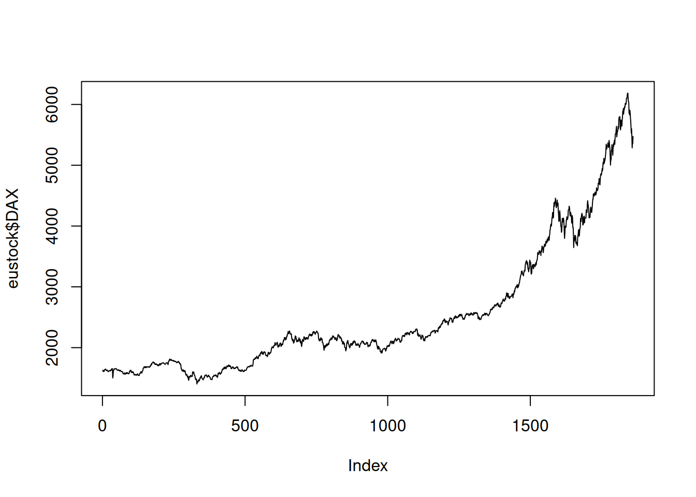
Plot DAX with a thick red line.
plot(eustock$DAX, type="l", col="red", lwd=3)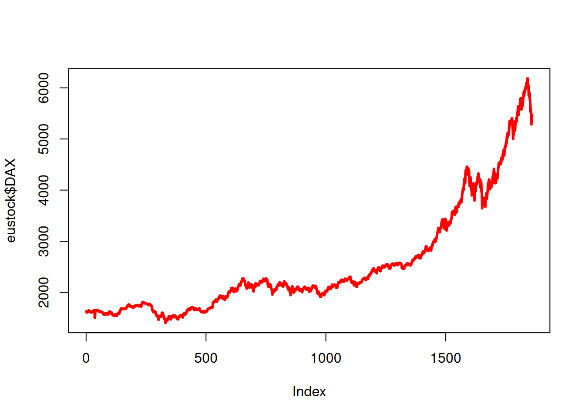
Plot DAX and SMI together:
plot(eustock$DAX, type="l", col="red")
lines(eustock$SMI, col="green")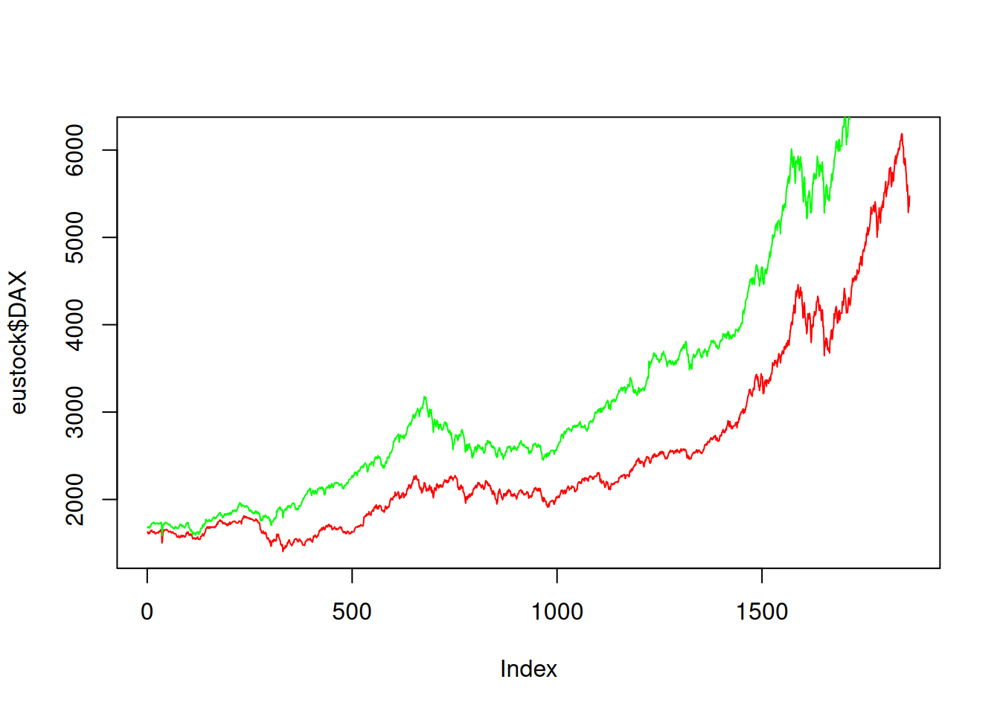
Let’s plot all the stocks on the same plot:
nstocks <- length(names(eustock))
colors <- rainbow(nstocks)
plot(eustock[[1]], type="l", col=colors[1], xlab="Business days", ylab="Stock value")
for(i in 2:nstocks ){
lines(eustock[[i]], col=colors[i])
}
legend("topleft", names(eustock), col=colors, lty=rep(1,nstocks), inset=0.05)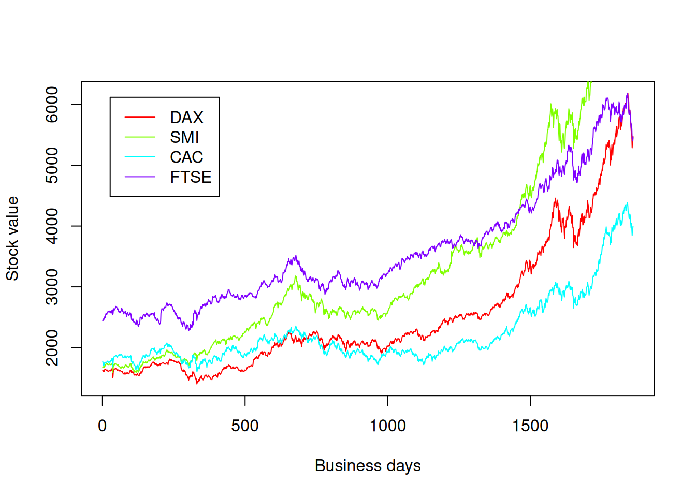
Dot, bar, and pie charts
mtcars mpg cyl disp hp drat wt qsec vs am gear carb
Mazda RX4 21.0 6 160.0 110 3.90 2.620 16.46 0 1 4 4
Mazda RX4 Wag 21.0 6 160.0 110 3.90 2.875 17.02 0 1 4 4
Datsun 710 22.8 4 108.0 93 3.85 2.320 18.61 1 1 4 1
Hornet 4 Drive 21.4 6 258.0 110 3.08 3.215 19.44 1 0 3 1
Hornet Sportabout 18.7 8 360.0 175 3.15 3.440 17.02 0 0 3 2
Valiant 18.1 6 225.0 105 2.76 3.460 20.22 1 0 3 1
Duster 360 14.3 8 360.0 245 3.21 3.570 15.84 0 0 3 4
Merc 240D 24.4 4 146.7 62 3.69 3.190 20.00 1 0 4 2
Merc 230 22.8 4 140.8 95 3.92 3.150 22.90 1 0 4 2
Merc 280 19.2 6 167.6 123 3.92 3.440 18.30 1 0 4 4
Merc 280C 17.8 6 167.6 123 3.92 3.440 18.90 1 0 4 4
Merc 450SE 16.4 8 275.8 180 3.07 4.070 17.40 0 0 3 3
Merc 450SL 17.3 8 275.8 180 3.07 3.730 17.60 0 0 3 3
Merc 450SLC 15.2 8 275.8 180 3.07 3.780 18.00 0 0 3 3
Cadillac Fleetwood 10.4 8 472.0 205 2.93 5.250 17.98 0 0 3 4
Lincoln Continental 10.4 8 460.0 215 3.00 5.424 17.82 0 0 3 4
Chrysler Imperial 14.7 8 440.0 230 3.23 5.345 17.42 0 0 3 4
Fiat 128 32.4 4 78.7 66 4.08 2.200 19.47 1 1 4 1
Honda Civic 30.4 4 75.7 52 4.93 1.615 18.52 1 1 4 2
Toyota Corolla 33.9 4 71.1 65 4.22 1.835 19.90 1 1 4 1
Toyota Corona 21.5 4 120.1 97 3.70 2.465 20.01 1 0 3 1
Dodge Challenger 15.5 8 318.0 150 2.76 3.520 16.87 0 0 3 2
AMC Javelin 15.2 8 304.0 150 3.15 3.435 17.30 0 0 3 2
Camaro Z28 13.3 8 350.0 245 3.73 3.840 15.41 0 0 3 4
Pontiac Firebird 19.2 8 400.0 175 3.08 3.845 17.05 0 0 3 2
Fiat X1-9 27.3 4 79.0 66 4.08 1.935 18.90 1 1 4 1
Porsche 914-2 26.0 4 120.3 91 4.43 2.140 16.70 0 1 5 2
Lotus Europa 30.4 4 95.1 113 3.77 1.513 16.90 1 1 5 2
Ford Pantera L 15.8 8 351.0 264 4.22 3.170 14.50 0 1 5 4
Ferrari Dino 19.7 6 145.0 175 3.62 2.770 15.50 0 1 5 6
Maserati Bora 15.0 8 301.0 335 3.54 3.570 14.60 0 1 5 8
Volvo 142E 21.4 4 121.0 109 4.11 2.780 18.60 1 1 4 2dotchart(mtcars$mpg,
labels=row.names(mtcars),cex=.7,
main="Gas Mileage for Car Models",
xlab="Miles Per Gallon")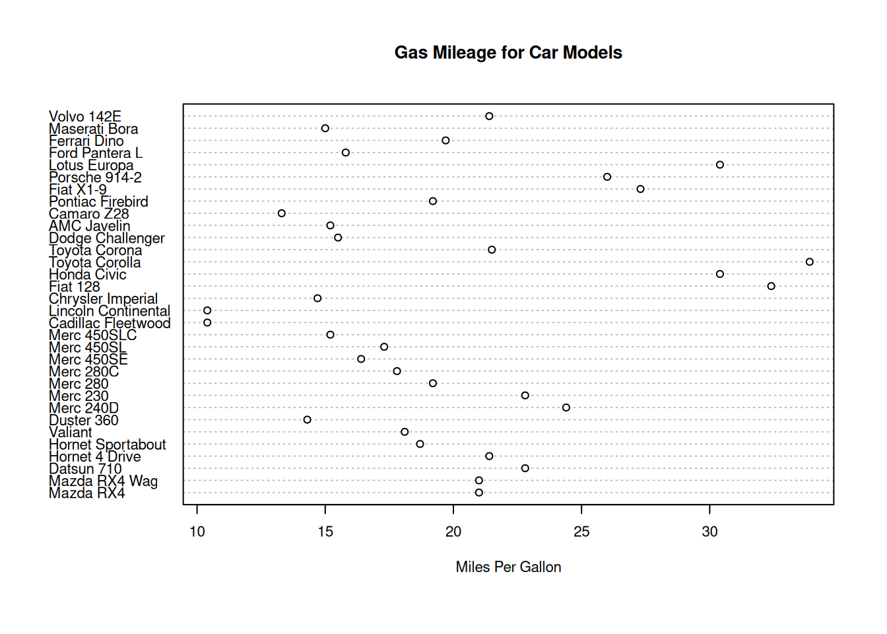
table(mtcars$cyl)
4 6 8
11 7 14 barplot(table(mtcars$cyl), main="Cylinder distribution", xlab = "Cylinders")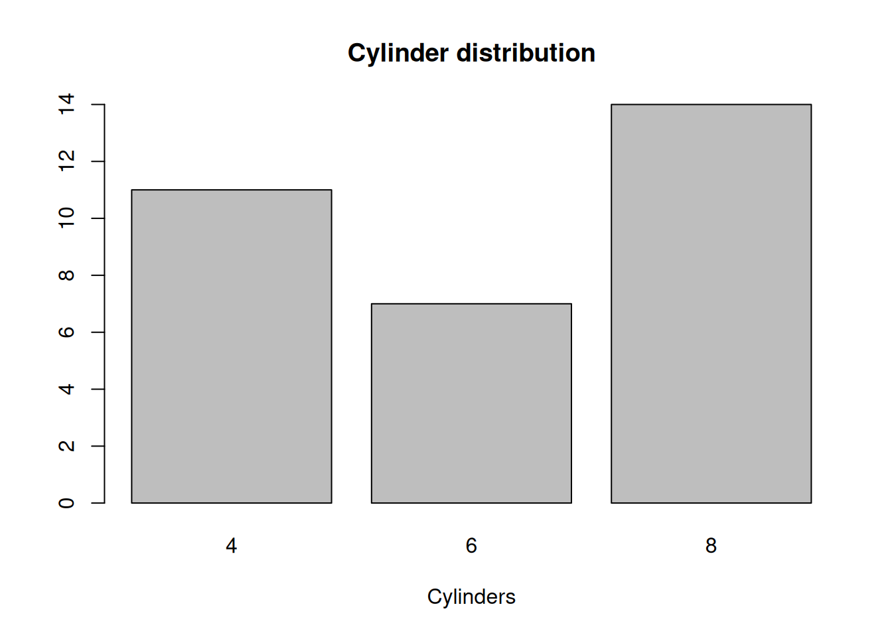
counts <- table(mtcars$cyl)
barplot(counts, main="Cylinder Distribution", horiz=TRUE,
names.arg=c("4 cyl", "6 cyl", "8 cyl"))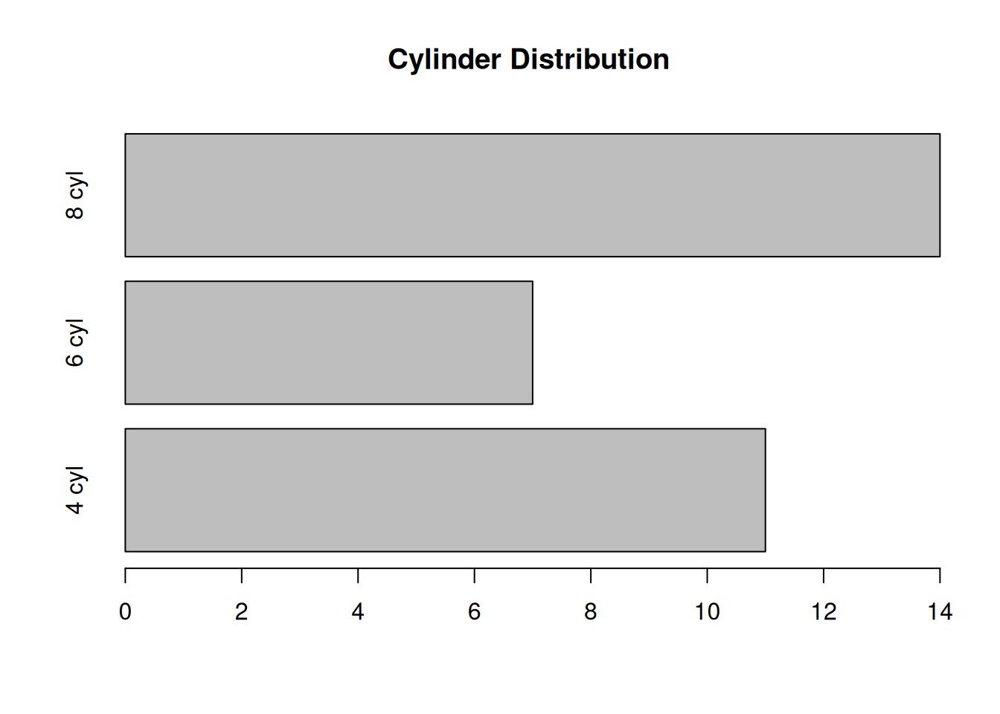
pie(counts, labels=c("4 cyl", "6 cyl", "8 cyl"),
col = rainbow(length(counts)),
main = "Cylinder distribution")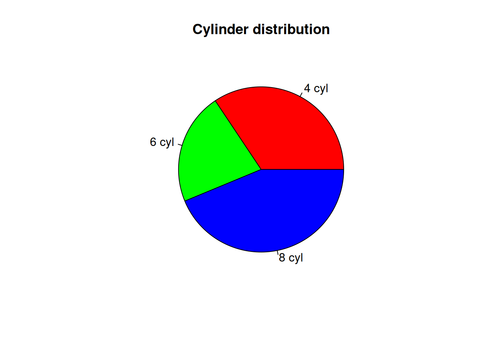
Figure arrays
Sometimes we want several plots in one figure. We can achieve this with the par() function.
options(repr.plot.width=6, repr.plot.height=4)normal1 <- rnorm(1000)
par(mfrow=c(1,2))
plot(normal1)
hist(normal1)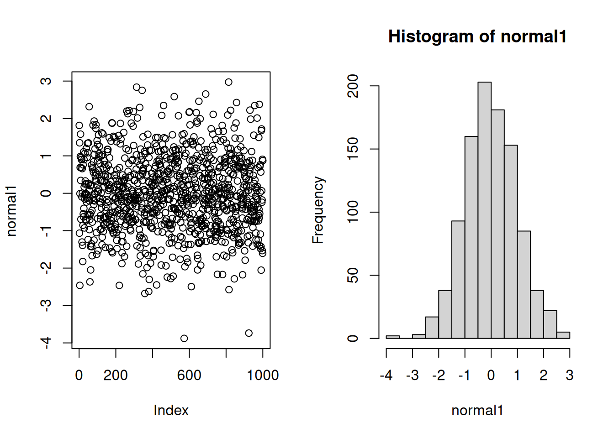
Here mfrow=c(1,2) specifies that the plots should be arranged as one row and two columns, and placement of figures should go by rows.
Alternatively, mfcol argument would force placement by columns. In this particular example, it gives an identical result.
Generate normally-distributed random numbers with twice the standard deviation and compare the plots.
options(repr.plot.width=8,repr.plot.height=8)
normal2 <- rnorm(1000, sd = 2)
par(mfrow=c(2,2))
plot(normal1)
hist(normal1)
plot(normal2)
hist(normal2)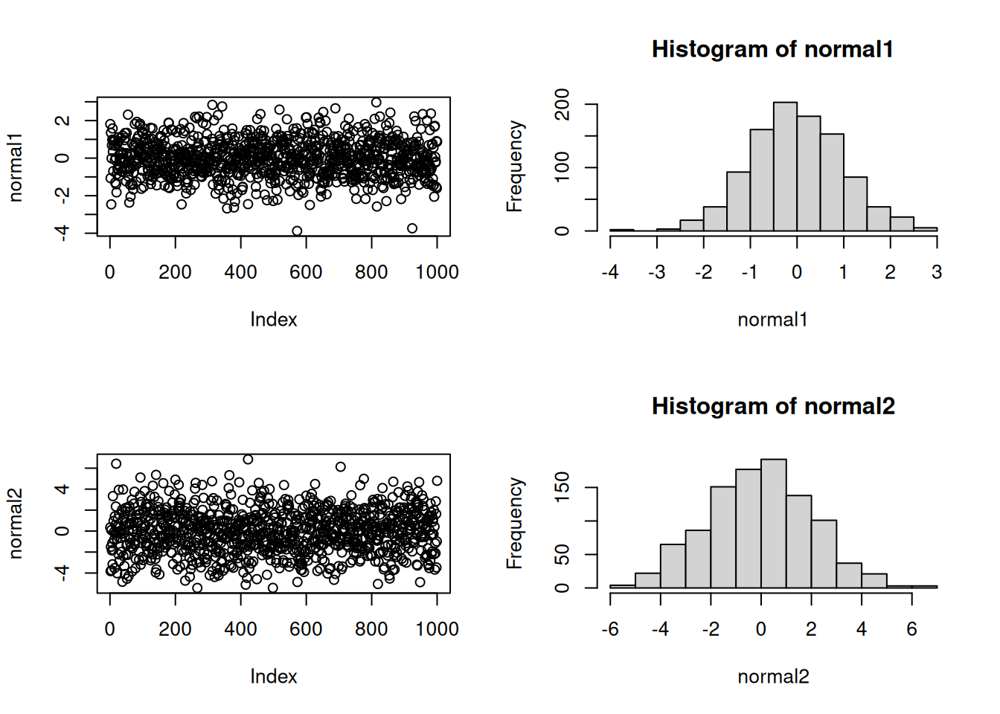
Match the axis scales for better comparison.
par(mfrow=c(2,2))
plot(normal1, ylim = c(-6,6), pch=4, col="blue")
hist(normal1, xlim = c(-6,6), col="red")
plot(normal2, ylim = c(-6,6), pch=4, col="blue")
hist(normal2, xlim = c(-6,6), col="red")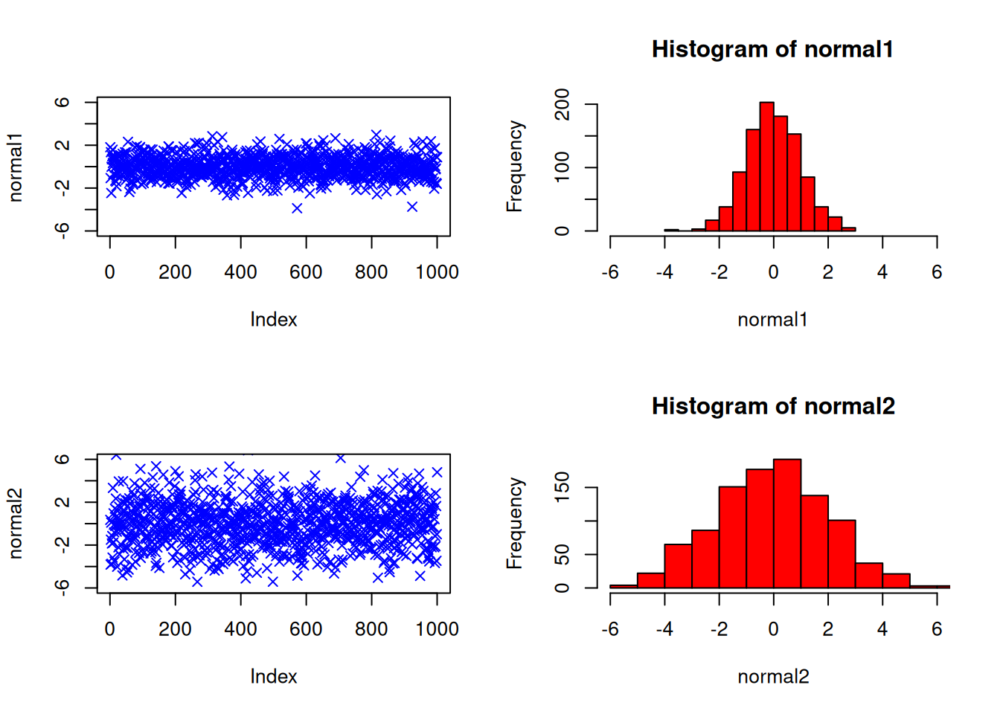
Parametric plots
options(repr.plot.width=8,repr.plot.height=6)
t <- seq(0, 2*pi, length.out = 200)
par(mfrow=c(2,3))
plot(cos(t), sin(2*t), type="l")
plot(cos(3*t), sin(2*t), type="l")
plot(cos(3*t), sin(4*t), type="l")
plot(cos(5*t), sin(4*t), type="l")
plot(cos(5*t), sin(6*t), type="l")
plot(cos(9*t), sin(8*t), type="l")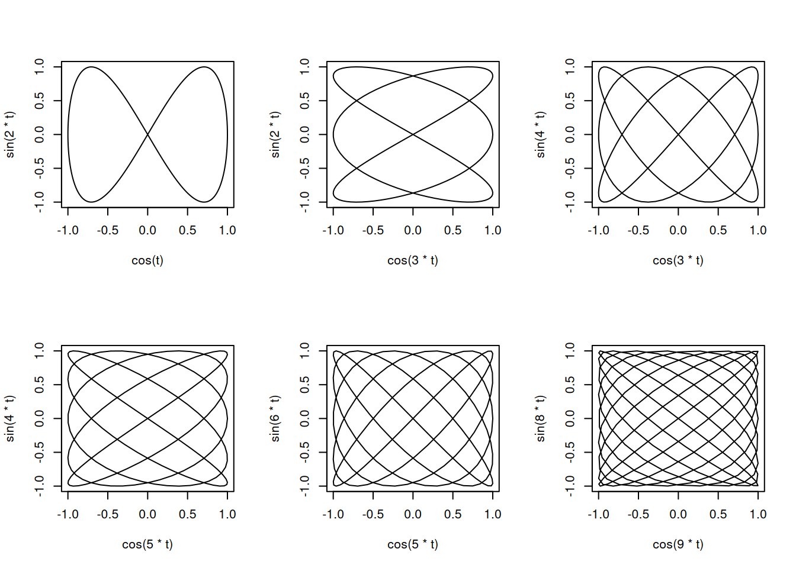
Box plots
A box-and-whisker plot provides a graphical summary of the distribution of data points.
randnums <- rnorm(1000)
summary(randnums) Min. 1st Qu. Median Mean 3rd Qu. Max.
-3.82096 -0.72654 -0.03715 -0.01106 0.68158 3.34002 The boxplot is a visual summary of the data:
options(repr.plot.width=3,repr.plot.height=5)
boxplot(randnums)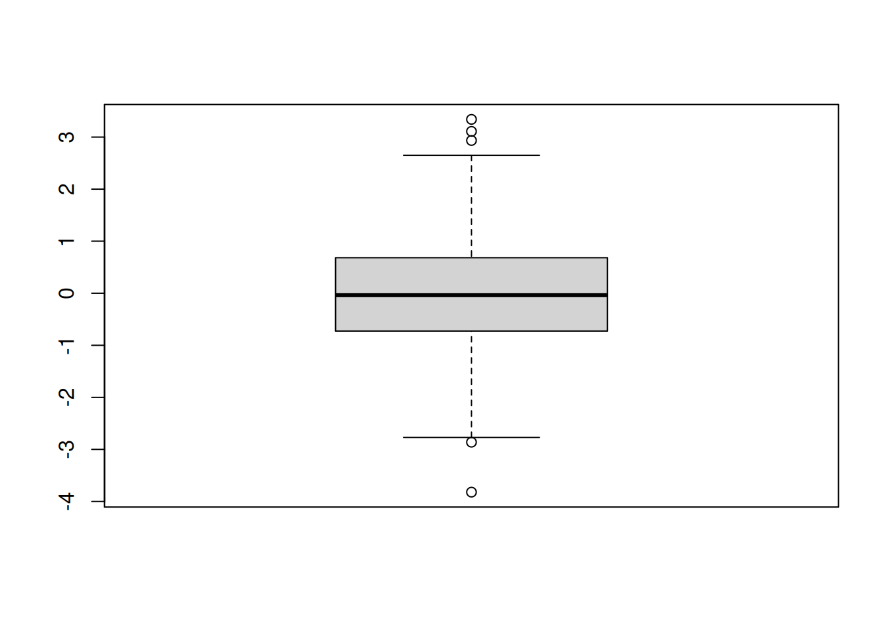
If you prefer to plot it sideways:
options(repr.plot.width=6,repr.plot.height=3)
boxplot(randnums,horizontal = TRUE)
title("Normally distributed random numbers")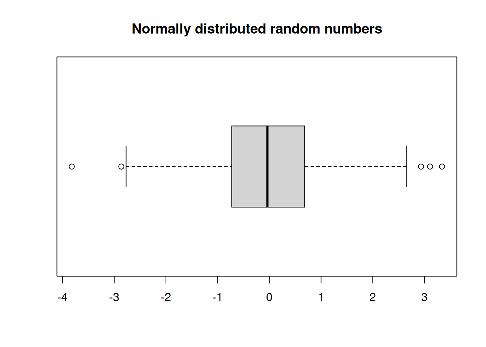
- The lines in the box indicate the first quartile, the median, and the third quartile. The length of the box is the interquartile range.
- The lines (whiskers) extend to the observations that are within a distance of 1.5 times the box length.
- Any other points farther out are considered outliers, and shown separately.
Boxplots of two or more distributions could be displayed side-by-side using par() function, but it is more informative to show them on a common set of axes.
randnums2 <- rnorm(1000, sd=2)
options(repr.plot.width=6,repr.plot.height=3)
boxplot(randnums, randnums2, horizontal = TRUE)
title("Normally distributed random numbers")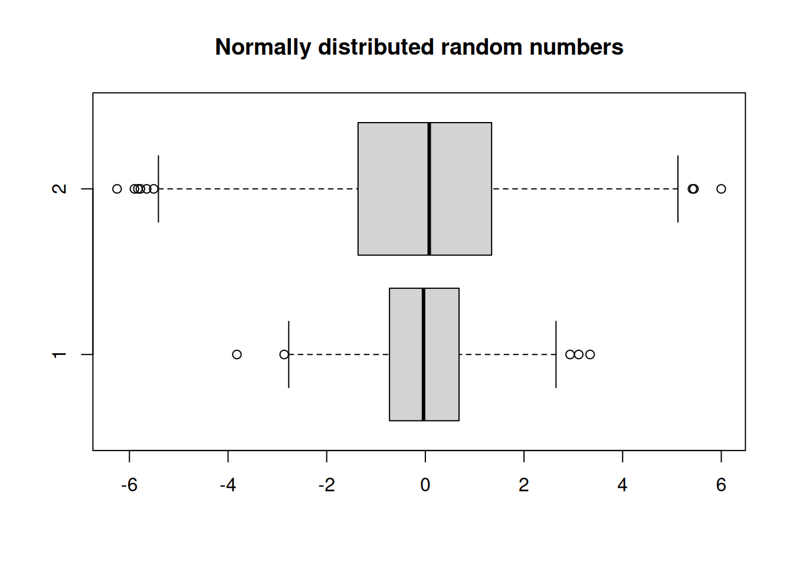
Let’s draw boxplots on the mtcars data set.
head(mtcars) mpg cyl disp hp drat wt qsec vs am gear carb
Mazda RX4 21.0 6 160 110 3.90 2.620 16.46 0 1 4 4
Mazda RX4 Wag 21.0 6 160 110 3.90 2.875 17.02 0 1 4 4
Datsun 710 22.8 4 108 93 3.85 2.320 18.61 1 1 4 1
Hornet 4 Drive 21.4 6 258 110 3.08 3.215 19.44 1 0 3 1
Hornet Sportabout 18.7 8 360 175 3.15 3.440 17.02 0 0 3 2
Valiant 18.1 6 225 105 2.76 3.460 20.22 1 0 3 1boxplot(mtcars$mpg, mtcars$hp, mtcars$wt)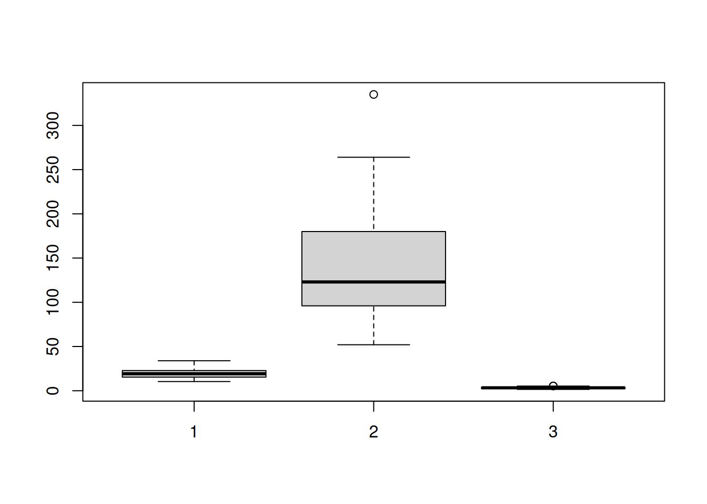
The scales vary too much. It is better in this case to plot them on separate axes.
par(mfrow = c(1,3))
boxplot(mtcars$mpg)
title("mpg")
boxplot(mtcars$hp)
title("hp")
boxplot(mtcars$wt)
title("wt")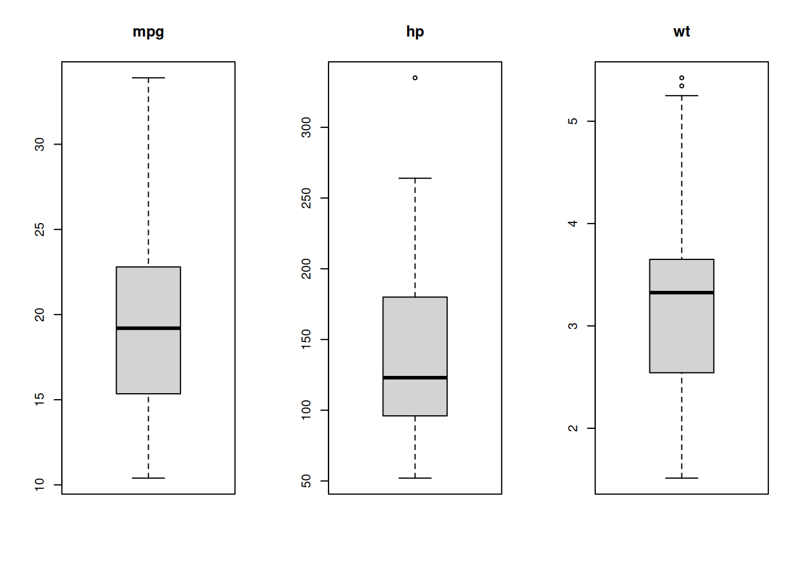
Strip charts
A strip chart is a one-dimensional scatter plot of some data. It helps us to see distributions of data points.
randnums1 <- rnorm(100)
randnums2 <- rnorm(100,mean=1,sd=0.5)
stripchart(list(randnums1, randnums2))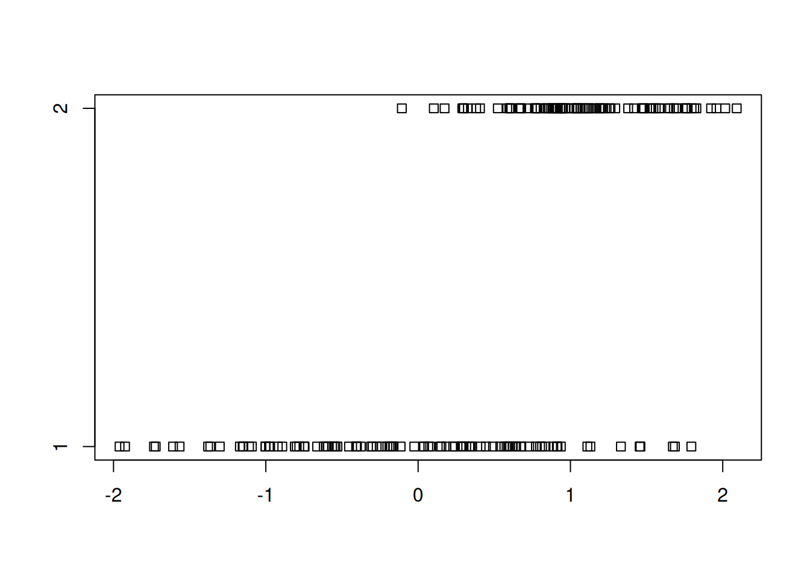
To avoid the overlap of points, we can introduce some “jitter”.
stripchart(list(randnums1, randnums2), method="jitter", group.names = c("data 1","data 2"))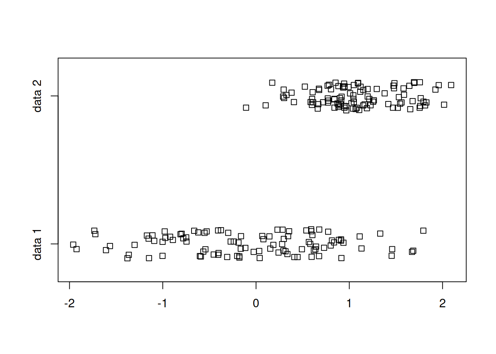
Some embellishments:
stripchart(list(randnums1, randnums2), method="jitter",
group.names = c("data 1","data 2"),
col=c("red","darkblue"), pch=4)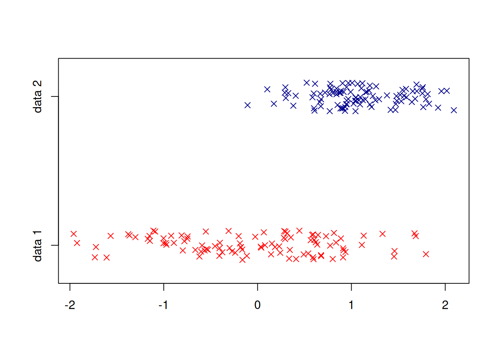
Exporting graphics
We frequently need to save our plot in various graphics formats so that we can put them in reports, papers or web pages. R can export graphics to many formats, including JPEG, PNG, TIFF, SVG, PDF, PS, BMP, WMF.
For example, here are the steps to create a PNG file * Call the png() function with the file name as argument. * Give the plotting commands. They will not produce a visible plot now. * When done, call the function dev.off(). Very important, otherwise you will get a bad file.
options(repr.plot.width=4,repr.plot.height=4)
plot(x = mtcars$wt, y = mtcars$mpg,
pch = 16, frame = FALSE,
xlab = "wt", ylab = "mpg", col = "#2E9FDF")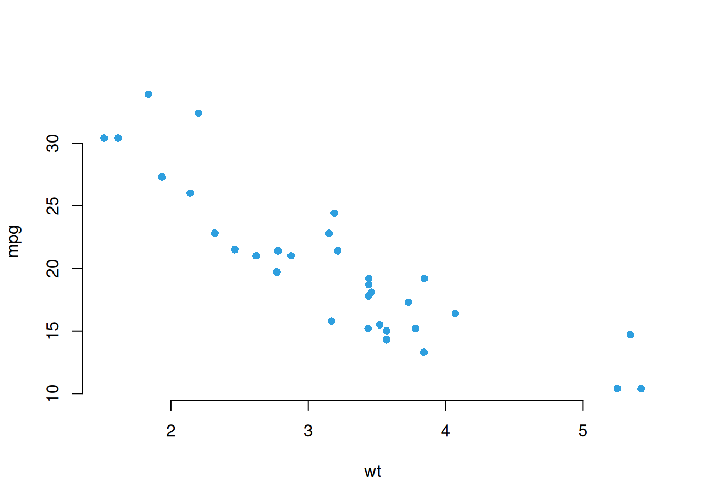
Export to a PNG file using the png() function.
png("cars.png") # open the PNG file.
# Plotting commands
plot(x = mtcars$wt, y = mtcars$mpg,
pch = 16, frame = FALSE,
xlab = "wt", ylab = "mpg", col = "#2E9FDF")
# finalize the export to png
dev.off()png
2 Note: If you are using RStudio, this can be achieved from the Plots->Export->Save menu.
To export to a PDF file, just change the first line:
pdf("cars.pdf")
plot(x = mtcars$wt, y = mtcars$mpg,
pch = 16, frame = FALSE,
xlab = "wt", ylab = "mpg", col = "#2E9FDF")
dev.off()png
2 The plotting functions allow for many customizations, depending on the file format. One common customization is the size of the plot. Let’s recreate the PNG file with a different size.
png("cars2.png", width = 200, height = 300)
# Plotting commands
plot(x = mtcars$wt, y = mtcars$mpg,
pch = 16, frame = FALSE,
xlab = "wt", ylab = "mpg", col = "#2E9FDF")
# finalize the export to png
dev.off()png
2